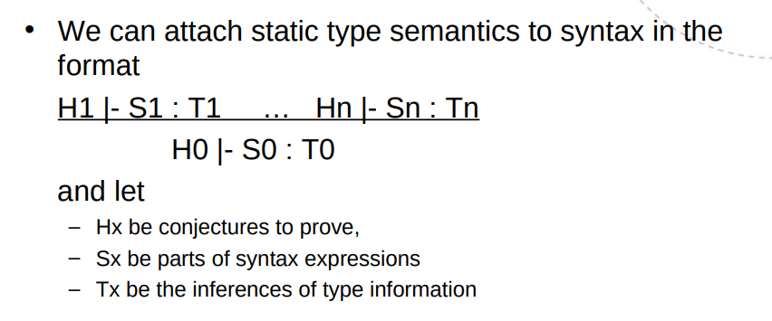

Exam notes
Lexical analysis
- McNaughton-Thompson-Yamada algorithm: regex -> NFA
- Subset Construction: group equivalent states (-closures), transition table with , NFA -> DFA
- Systematic minimization:
- Start with two groups: all non-final states and all final states.
- Within a group, check pairs for equivalence. If found, these are separated into their own group.
- In the end, the equivalence groups may be merged to create a minimized DFA
Syntax analysis
LL(1) tables. (x, y) = (term. + $, non-term.). Enter X -> a at (X, s) if s is in FIRST(a). If nullable, also enter X -> e at (X, t) where t is in FOLLOW(a).
LR(0) automaton. Maybe add root. Add prods where dot is before non-term.
LR(0) table. (x, y) = (Automaton state, term. + $ | non-term.) Items: shift(state), reduce(prod) or goto(state).
SLR(0): Only reduce(prod) if column terminal is in FOLLOW.
LALR: "Merge states that are similar except for the lookahead"
Tabulate derivation: Cols: Stack, Input, Action. Either Output/Match or Shift/Reduce
Left factoring shortens the distance to the next nonterminal
E.g. from
- A abcdef | abcxyz
To
- A abcA'
- A' def | xyz
Left recursion elimination shifts a nonterminal to the right
E.g. from
- A A a | a
To
- A a A'
- A' a A' |
A symbol table may store names, types and memory location (e.g. function address).
L-attributed (top-down) grammars allow synthesized attributes, and inheritance from the left. In S-attribution (bottom-up), all attributes are synthesized.

Intermediate representation
x = &y OP *z
Label:
goto Label
if x OP y goto Label
param x
call Label
return a[i]
Data flow analysis
A node X dominates a node Y if every path to Y must go through X. Every node dominates itself.
A partial order (P,⊑) contains a set of things P and a relation ⊑. The relation is reflexive, anti-symmetric and transitive. A partial order is a lattive if all subsets have a g.l.b. and l.u.b.
MOP = MFP when the transfer function is distributive with regard to the meet operation. E.g. the they only depend on set union and intersection. (MFP) F(x U y) = F(x) U F(y) (MOP)
A live variable is one which holds a value that may still be used at a later point
| Analysis | Direction | Meet Op. | Explanation |
|---|---|---|---|
| Live variables | backward | union | Kill defined, gen used |
| Copy propagation | forward | intersection | Kill non-copy, gen copy |
| Available expr | forward | intersection | Kill exprs with id, gen expr |
| Reaching defs | forward | unions | Kill defined, gen def |
| Constant folding | forward | CF meet | Kill defined, gen def* |
* either non-const, number or T (const)
Forward: out[I] = { in[I] – kill(I) } ⋃ gen(I)
Backward: in[I] = { out[I] - kill(I) } ⋃ gen(I)
Optimization
- Function inlining
- Function cloning (specialization)
- Optimize for certain inputs or environments
- Constant folding
- Compile-time calculations of expressions with known values
- Constant propagation
- Constant variable replaced by value
- Unreachable/dead code elimination
- x = 1; x = 2; or if false:
- Loop-invariant code motion
- Common sub-expression elimination
- Strength reduction
- Replace expensive operations with cheaper ones, e.g. replace multiplication by addition
- Loop unrolling
Run-time environment and Code generation
C is statically typed but not type safe. Javascript is dynamically typed, but type safe. (Crashes on type error)
Dynamic dispatch: to select implementation of a polymorphic operation to call at run time. Given a variable of known type, the dispatch vector provides the correct function address. Interfaces are constraints on the dispatch vector layout.
return value: RAX,
parameters: RDI, RSI, RDX, RCX, R8, R9, (stack)
x86 Example
.globl main
.section .data
hello:
.string "Hello, world! %ld\n"
.section .text
main:
pushq %rbp
movq %rsp, %rbp
movq $42, %rsi
movq $hello, %rdi
call printf
leave
ret
An activation record
..
Next call's local variables
My frame ptr.
------------------- <
Return address
Arguments
(Intermediate data)
Local variables
Caller's frame ptr.
------------------- <
Return address
Arguments
..
Tools
// scanner.l (lex)
%{
// Define tokens
%}
%option
WHITESPACE [\ \t\v\r\n]
COMMENT \/\/[^\n]+
%%
{WHITESPACE}+ { /* Eliminate whitespace */ }
{COMMENT} { /* Eliminate comments */ }
func { return FUNC; }
[0-9]+ { return NUMBER; }
/* Unknown chars get returned as single char tokens */
. { return yytext[0]; }
%%
// parser.y (yacc)
%{
/* State variables from the flex generated scanner */
extern int yylineno; // The line currently being read
extern char yytext[]; // The text of the last consumed lexeme
/* The main flex driver function used by the parser */
int yylex ( void );
%}
%token FUNC PRINT RETURN BREAK IF THEN ELSE WHILE FOR IN DO OPENBLOCK CLOSEBLOCK
%token VAR NUMBER IDENTIFIER STRING
%left '+' '-'
%left '*' '/'
%right UMINUS
%nonassoc IF THEN
%nonassoc ELSE
%%
program :
global_list { root = node_init (PROGRAM, NULL, $1 ); }
;
identifier: IDENTIFIER { $ = node_init(IDENTIFIER_DATA, strdup(yytext) ); }
%%